CATALOGUE
Category and product views create the path into the store.
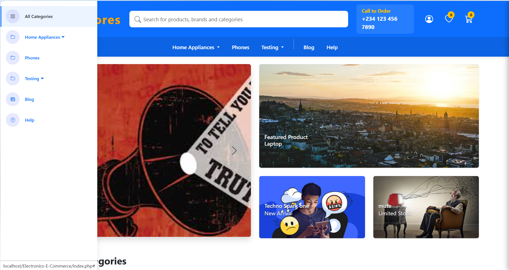
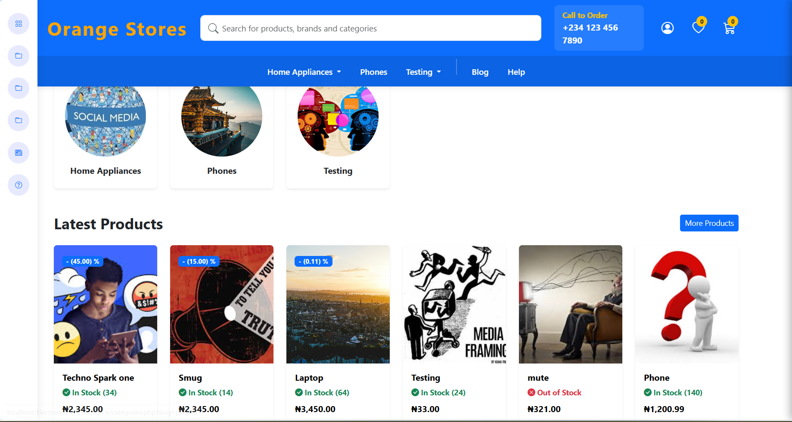
Commerce is a chain of states. Discovery has to remain connected to product information, cart decisions, checkout and the operational view behind the storefront.
The supplied screens expose both sides of the system: shopping flows for customers and an admin dashboard for managing the store.
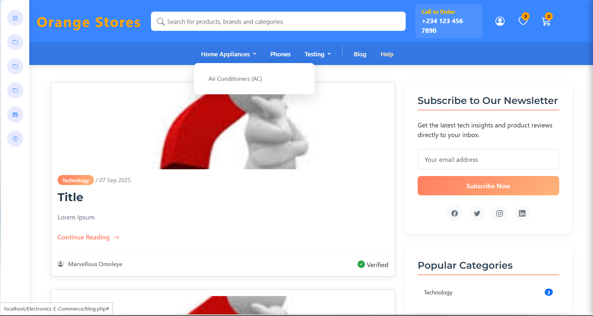
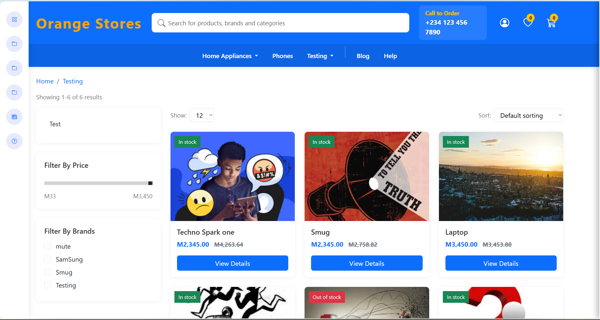
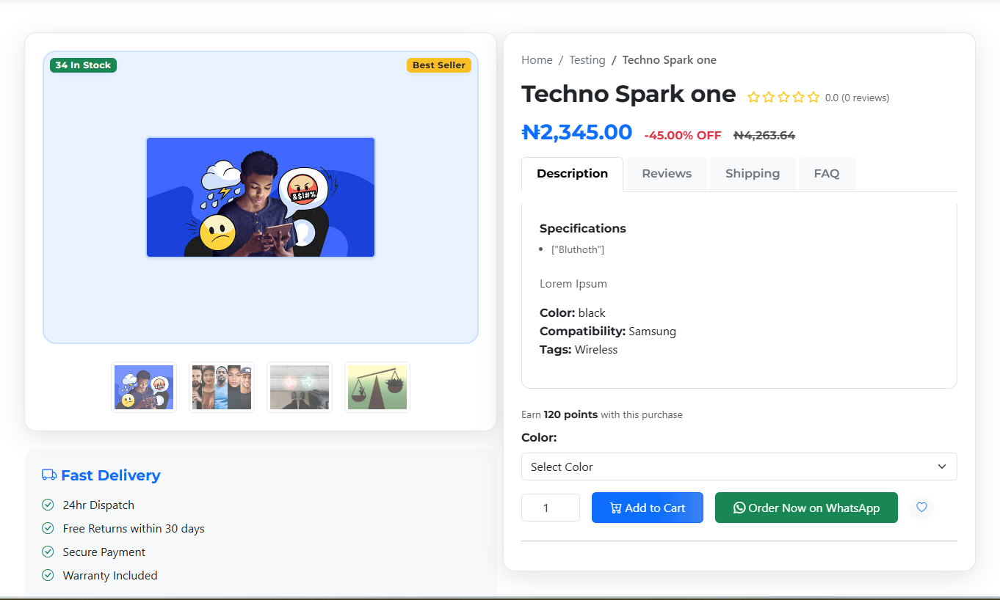
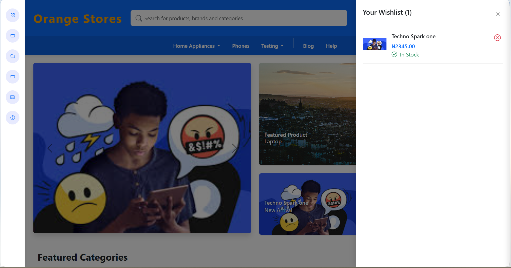
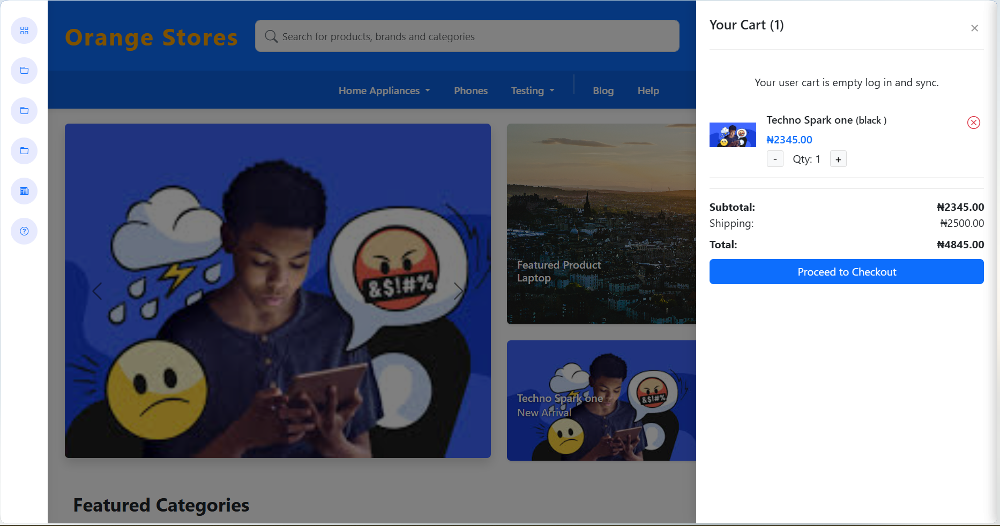
This section translates the supplied interface into the sequence of responsibilities visible in the build record.
Category and product views create the path into the store.
Product detail, wishlist and cart preserve the shopper's decision state.
The admin view makes the commerce system visible beyond the customer-facing interface.
A build record that connects the visible interface to the job the product is trying to do.
These are the actual project images supplied for the archive. They are shown without fabricated performance claims or fake client outcomes.
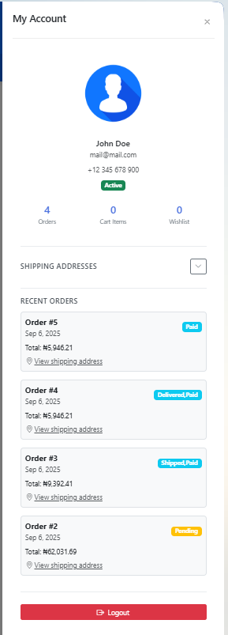
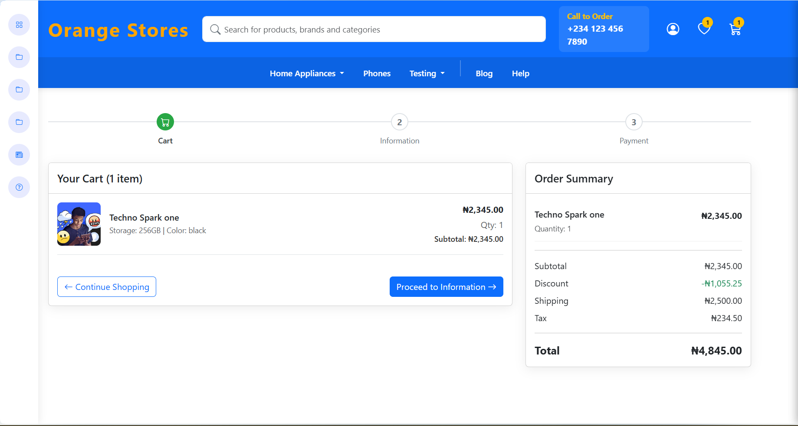
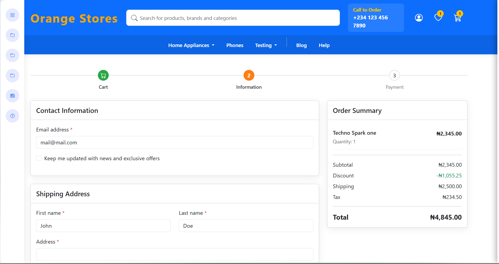
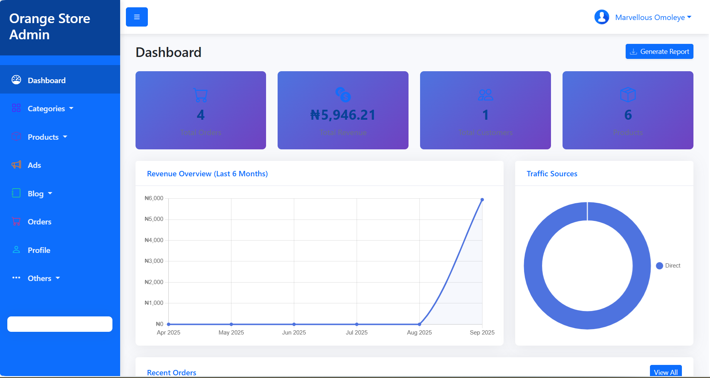